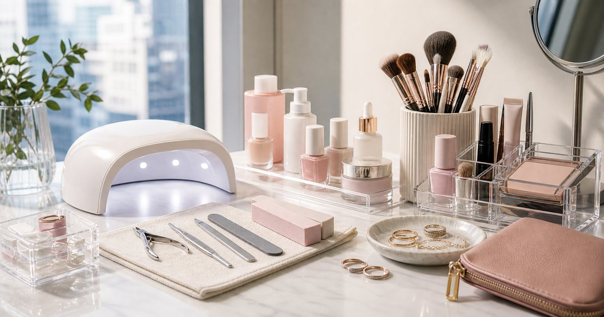

Elite Fashion｜居家美甲與彩妝工具：新手友善材料、刷具與收納怎麼買
美甲和彩妝工具最怕買得比用得快。先整理材料、刷具、燈具、收納與日常飾品，居家梳妝台才不會失控。

先決定你要做日常整理，還是完整作品
居家美甲和完整作品需要的工具差很多。若只是日常修整，基礎工具和收納就夠；若要做更完整的造型，才需要更細的材料與練習空間。
可以把 女王美學、GINGER MAKE UP、BAYBEYLA、ART64、玖伍 jewelry 與 Mister 放進同一個日常情境裡比較，但順序要放對。編輯部會先看使用頻率、清潔保存、是否適合出門攜帶、是否容易和既有用品搭配，而不是把保養或工具堆成越多越好。
比較穩妥的判斷是先確認 你每週會使用幾次、是否願意清潔工具。常見失誤是 一開始買完整材料，卻沒有固定桌面和收尾流程；在 居家梳妝台、週末整理與出門前快速補妝 裡，能被穩定使用、容易收好、看得懂使用限制的品項，通常比一次買很多更實際。
- 新手先從少量工具開始。
- 桌面要有可清潔、可收納的區域。
美甲材料要看清潔與保存，不只看顏色
美甲材料最容易被顏色吸引，但更需要看保存、氣味、照明、清潔和是否適合自己的操作時間。
可以把 女王美學、GINGER MAKE UP、BAYBEYLA 與 ART64 放進同一個日常情境裡比較，但順序要放對。編輯部會先看使用頻率、清潔保存、是否適合出門攜帶、是否容易和既有用品搭配，而不是把保養或工具堆成越多越好。
比較穩妥的判斷是先確認 材料保存方式、是否需要燈具、桌面是否好清理。常見失誤是 顏色買很多，基礎工具和清潔用品卻不足；在 小宅桌面、共用房間與週末美甲時間 裡，能被穩定使用、容易收好、看得懂使用限制的品項，通常比一次買很多更實際。
- 顏色先少量，工具先完整。
- 使用後清潔流程要先想好。
刷具和化妝箱要依使用頻率分層
彩妝刷具和化妝箱如果沒有分層，很快就會變成找不到東西。每天用的刷具放前面，特殊妝容和備用工具收在後面。
可以把 GINGER MAKE UP、BAYBEYLA、女王美學與 Mister 放進同一個日常情境裡比較，但順序要放對。編輯部會先看使用頻率、清潔保存、是否適合出門攜帶、是否容易和既有用品搭配，而不是把保養或工具堆成越多越好。
比較穩妥的判斷是先確認 哪些工具每天會用、哪些只是偶爾使用。常見失誤是 把所有刷具一起插在桌上，灰塵和混亂都增加；在 上班前、拍照前與旅行補妝 裡，能被穩定使用、容易收好、看得懂使用限制的品項，通常比一次買很多更實際。
- 每天使用的刷具數量不用多。
- 刷具要有清潔和晾乾位置。
飾品和美甲彩妝要一起看場合
美甲、彩妝與飾品其實都服務同一件事：場合感。上班、聚餐、旅行或拍照，不同場合需要不同程度的整理。
可以把 ART64、玖伍 jewelry、GINGER MAKE UP 與 BAYBEYLA 放進同一個日常情境裡比較，但順序要放對。編輯部會先看使用頻率、清潔保存、是否適合出門攜帶、是否容易和既有用品搭配，而不是把保養或工具堆成越多越好。
比較穩妥的判斷是先確認 你最常出現在哪些場合，以及是否需要低調或亮眼。常見失誤是 指甲、妝容和飾品各自很滿，整體卻沒有重點；在 辦公室、晚餐聚會、旅行與拍攝日 裡，能被穩定使用、容易收好、看得懂使用限制的品項，通常比一次買很多更實際。
- 日常場合保留一個焦點即可。
- 飾品可用小盒依場合分類。
小皮件與收納讓工具不再散落
美妝工具不一定都要放大盒子。刷具包、小皮件、小托盤或抽屜分隔，都能讓工具更容易帶出門或收回來。
可以把 Mister、GINGER MAKE UP、BAYBEYLA、ART64 與玖伍 jewelry 放進同一個日常情境裡比較，但順序要放對。編輯部會先看使用頻率、清潔保存、是否適合出門攜帶、是否容易和既有用品搭配，而不是把保養或工具堆成越多越好。
比較穩妥的判斷是先確認 哪些工具需要外出攜帶，哪些留在家中。常見失誤是 把所有工具都放同一個大袋，補妝時還要翻找；在 辦公室補妝、旅行盥洗包與週末外出 裡，能被穩定使用、容易收好、看得懂使用限制的品項，通常比一次買很多更實際。
- 外出包只放必要工具。
- 家用工具和外出工具最好分開。
成熟的梳妝台，是看得見、拿得到、收得回
居家工具整理到最後，不是要展示所有用品，而是讓你知道每一件東西在哪裡、用完能回到哪裡。
可以把 女王美學、GINGER MAKE UP、BAYBEYLA、ART64、玖伍 jewelry 與 Mister 放進同一個日常情境裡比較，但順序要放對。編輯部會先看使用頻率、清潔保存、是否適合出門攜帶、是否容易和既有用品搭配，而不是把保養或工具堆成越多越好。
比較穩妥的判斷是先確認 桌面是否能在五分鐘內恢復原狀。常見失誤是 只規劃漂亮開場，沒有規劃用完後怎麼收；在 需要兼顧上班效率與週末整理的人 裡，能被穩定使用、容易收好、看得懂使用限制的品項，通常比一次買很多更實際。
- 收尾流程比工具數量更重要。
- 每月盤點一次耗材和過期品。
FAQ
居家美甲新手要先買很多顏色嗎？
不建議。先補基礎工具、清潔用品與少量常用色，等使用頻率穩定再增加顏色。
彩妝刷具越多越好嗎？
不一定。每天會用的刷具先整理清楚，比一次買很多更容易維持清潔。
飾品和美甲彩妝怎麼搭才不會太滿？
先看場合，日常上班可保留一個焦點；聚會或拍照再增加細節。
下一步建議
如果你想整理居家美甲和彩妝工具，先從基礎工具、每日刷具與可收回的桌面開始。
重要警語
本文為一般美甲、彩妝工具與飾品收納情境整理，不構成專業技術教學或個別測試報告。工具、材料與飾品請依商品標示與個人狀況使用。
本文含品牌／商品導購連結；若你透過部分商品連結前往選購，Elite Fashion 可能取得合作收益。本文仍以編輯判斷與使用情境整理為主，價格、規格、活動與庫存請以商品頁公告為準。